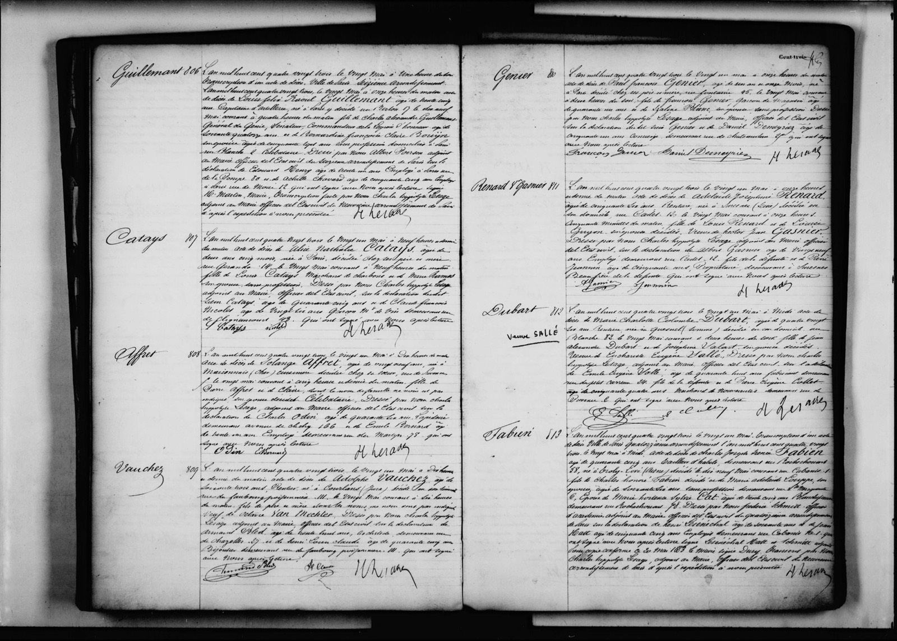

Acte d'état civil · 21 mai 1883
Décès de Marie Charlotte Colombe DUBART, veuve SALLÉ, Paris 9e arr., acte n° 812 du 21/05/1883
Ce document établit
- Marie Charlotte Colombe Dubart, veuve Sallé, meurt le 20 mai 1883 à 14 h à son domicile, 82 rue Blanche ; l'acte n° 812 du 9e (21/05/1883) la dit âgée de 86 ans, rentière [?], née au Quesnel, fille de Jean Alexandre Dubart et de Joséphine Valart [Salart] vérifié A0752
« acte de décès de Marie Charlotte Colombe Dubart, âgée de quatre-vingt-six ans, rentière [?], née au Quesnel (Somme), décédée en son domicile rue Blanche 82 le vingt mai courant à deux heures du soir ; fille de Jean Alexandre Dubart et de Joséphine Valart » (lecture incertaine : oui)
- Les déclarants du décès de Colombe Dubart (21/05/1883) sont Émile Eugène Sallé, 48 ans, fabricant, 24 rue du Petit-Carreau, fils de la défunte, et Pierre Eugène Collet, 54 ans, marchand de nouveautés, rue de Provence [1 ?] ; Edmond Dubart n'y figure pas vérifié A0753
« sur la déclaration de Émile Eugène Sallé, âgé de quarante-huit ans, fabricant, demeurant rue du Petit-Carreau 24, fils de la défunte, et de Pierre Eugène Collet, âgé de cinquante-quatre ans, marchand de nouveautés » (lecture incertaine : oui)
Transcription
recherches/generation-4/dubart-edmond/transcriptions.md (T19)
Lire la transcription intégrale : Transcriptions : Edmond DUBART (P5232) →
Personnes concernées
Registre du 9e selon le catalogue ; en-tête d'arrondissement de la page non relu